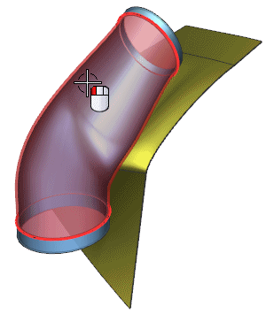
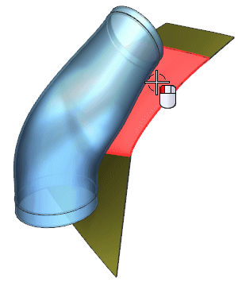
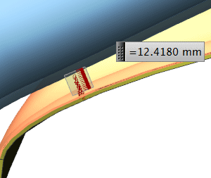

From the Face Rule list, select Single Face.
Select outer face of the tube.

Click the middle mouse button to advance.
From the Face Rule list, select Single Face.
Select curved face of the panel as shown.

Zoom in and note the value and location of the measurement.

Click OK.
Right click and choose Undo.